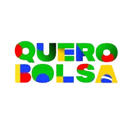
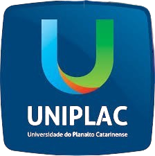

O Universidade Gratuita é um dos programas de assistência financeira estudantil do ensino superior oferecidos pelo Governo de Santa Catarina. Ele oferece gratuidade de ensino para estudantes de cursos de graduação em fundações e autarquias municipais universitárias e entidades sem fins lucrativos de assistência social.
A Lei que institui o programa Universidade Gratuita em Santa Catarina foi sancionada em 1º de agosto de 2023 pelo governador Jorginho Mello. De autoria do Executivo, o programa prevê custear 100% do curso na universidade em várias áreas, priorizando alunos que não tenham condições de pagar com a renda familiar a formação. Serão 70 mil vagas gratuitas no ensino superior até o ano de 2026.
A partir da sanção do governador, a Secretaria de Estado da Educação (SED) ficará responsável pela regulação do programa, por meio de decretos e uma portaria com as regras. Para tirar todas as dúvidas sobre os programas de assistência financeira do ensino superior do Governo do Estado, a população pode acessar o material com perguntas e respostas sobre o tema.
Para se candidatar ao programa, o estudante precisa estar regularmente matriculado nas instituições universitárias com adesão deferida e atender aos seguintes critérios:

Cadastre-se e garanta a sua bolsa

documentação para bolsa.